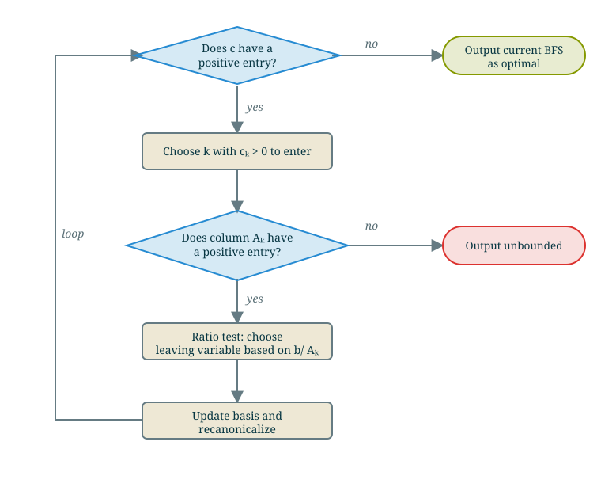
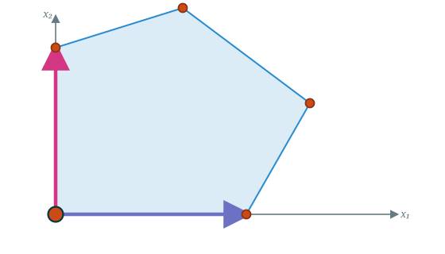
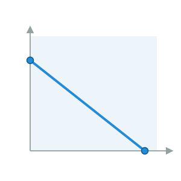
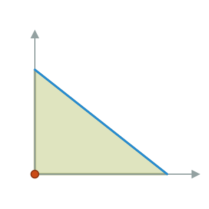

Kevin Shu
Given a LP in SEF and a canonical form with a basic feasible solution,
| maximize | $c^{\intercal}x$ |
| such that | $Ax = b$ |
| $x \ge 0$ |

There is a component which is not fully specified: we need to decide how to choose the entering variable (and the leaving variable if the leaving variable is ambiguous).

The way we do this choice is called the pivot rule, and different pivot rules can have different properties.
It's an open question what the best pivot rule is to make the simplex method fastest!
The choice of pivot rule usually is not so important to correctness, but there is one case where it can make a difference.
Last week, we showed that if the simplex algorithm terminates (either by outputting an optimal point or declaring the LP infeasible), then it will be correct.
What if the simplex method never terminates?
There are only finitely many bases (each basis is a subset of the columns, and there are only $2^n$ of these). So we can only increase the objective finitely many times before terminating.
Are there situations in which the objective does not increase in the simplex method?
There is one issue case that was not mentioned in last week's lectures: do we always make progress in the simplex algorithm?
| max | $\begin{pmatrix} \color{blue}0 & 1 & \color{blue}0 & -1\end{pmatrix} x + 1$ |
| such that | $\begin{pmatrix} \color{blue}1 & 0 & \color{blue}0 & 1 \\ \color{blue}0 & 1 & \color{blue}1 & -2 \end{pmatrix} x = \begin{pmatrix} 1 \\ 0 \end{pmatrix}$ |
| $x \ge 0$ |
What is the basic feasible solution associated to this basis?
$x = (1 \; 0 \; 0\; 0)$
Which variable enters?
There is one issue case that was not mentioned in last week's lectures: do we always make progress in the simplex algorithm?
| max | $\begin{pmatrix} \color{blue}0 & \color{red}1 & \color{blue}0 & -1\end{pmatrix} x + 1$ |
| such that | $\begin{pmatrix} \color{blue}1 & \color{red}{-1} & \color{blue}0 & 1 \\ \color{blue}0 & \color{red}1 & \color{blue}1 & -2 \end{pmatrix} x = \begin{pmatrix} 1 \\ 0 \end{pmatrix}$ |
| $x \ge 0$ |
Variable 2 enters. Which variable leaves?
There is one issue case that was not mentioned in last week's lectures: do we always make progress in the simplex algorithm?
| max | $\begin{pmatrix} \color{blue}0 & \color{red}1 & \color{blue}0 & -1\end{pmatrix} x + 1$ |
| such that | $\begin{pmatrix} \color{blue}1 & \color{red}{-1} & \color{blue}0 & 1 \\ \color{blue}0 & \color{red}1 & \color{blue}1 & -2 \end{pmatrix} x = \begin{pmatrix} 1 \\ 0 \end{pmatrix}$ |
| $x \ge 0$ |
The only positive entry in the column $A_2$ is the second one, so the variable in the second row (variable 3) leaves (with a ratio of $0/1 = 0$).
There is one issue case that was not mentioned in last week's lectures: do we always make progress in the simplex algorithm?
| max | $\begin{pmatrix} \color{blue}0 & \color{red}1 & \color{blue}0 & -1\end{pmatrix} x + 1$ |
| such that | $\begin{pmatrix} \color{blue}1 & \color{red}{-1} & \color{blue}0 & 1 \\ \color{blue}0 & \color{red}1 & \color{blue}1 & -2 \end{pmatrix} x = \begin{pmatrix} 1 \\ 0 \end{pmatrix}$ |
| $x \ge 0$ |
To make this into RREF, just add the second row to the first one.
There is one issue case that was not mentioned in last week's lectures: do we always make progress in the simplex algorithm?
| max | $\begin{pmatrix} \color{blue}0 & \color{red}1 & \color{blue}0 & -1\end{pmatrix} x + 1$ |
| such that | $\begin{pmatrix} \color{blue}1 & \color{red}0 & \color{blue}1 & -1 \\ \color{blue}0 & \color{red}1 & \color{blue}1 & -2 \end{pmatrix} x = \begin{pmatrix} 1 \\ 0 \end{pmatrix}$ |
| $x \ge 0$ |
To make this into RREF, just add the second row to the first one.
There is one issue case that was not mentioned in last week's lectures: do we always make progress in the simplex algorithm?
| max | $(\begin{pmatrix} \color{blue}0 & \color{red}1 & \color{green}0 & -1\end{pmatrix} - \begin{pmatrix} \color{blue}0 & \color{red}1 & \color{green}1 & -2\end{pmatrix}) x + 1$ |
| such that | $\begin{pmatrix} \color{blue}1 & \color{red}0 & \color{blue}1 & -1 \\ \color{blue}0 & \color{red}1 & \color{blue}1 & -2 \end{pmatrix} x = \begin{pmatrix} 1 \\ 0 \end{pmatrix}$ |
| $x \ge 0$ |
There is one issue case that was not mentioned in last week's lectures: do we always make progress in the simplex algorithm?
| max | $\begin{pmatrix} \color{blue}0 & \color{blue}0 & -1 & 1\end{pmatrix} x + 1$ |
| such that | $\begin{pmatrix} \color{blue}1 & \color{blue}0 & 1 & -1 \\ \color{blue}0 & \color{blue}1 & 1 & -2 \end{pmatrix} x = \begin{pmatrix} 1 \\ 0 \end{pmatrix}$ |
| $x \ge 0$ |
Note that the basic feasible solution didn't change!
Now, there is an issue: what if we get `stuck' on the same basic feasible solution?
There is a possibility of degeneracy in the canonical form: multiple bases can have the same basic feasible solution.
This happens whenever a basic feasible solution has a basic entry that is 0.
| max | $\begin{pmatrix} \color{blue}0 & \color{blue}0 & -1 & 1\end{pmatrix} x + 1$ |
| such that | $\begin{pmatrix} \color{blue}1 & \color{blue}0 & 0 & 1 \\ \color{blue}0 & \color{blue}1 & 1 & -1 \end{pmatrix} x = \begin{pmatrix} 1 \\ 0 \end{pmatrix}$ |
| $x \ge 0$ |
The basic feasible solution $(1\;0\;0\;0)$ is basic feasible for the bases $\{1,3\}$, $\{1,2\}$ and $\{1,4\}$.
If there is a degenerate basis, then it is possible to `cycle' if the pivot rule is not chosen carefully. That is, we can apply simplex iterations in valid ways but wind up back at the same basis that we started with.
We can avoid cycling as follows: if we can always pick the entering variable with the smallest index, and the leaving variable with the smallest index, then we will never cycle, and eventually, the simplex method will terminate.
This is known as Bland's rule.
In this case, to break ties (i.e. in situations where there are multiple choices for the entering variable, )
Look at the following LP:
| max | $\begin{pmatrix} 2 & 1 & \color{blue}0 & \color{blue}0 & \color{blue}0\end{pmatrix} x$ |
| such that | $\begin{pmatrix} 1 & 0 & \color{blue}1 & \color{blue}0 & \color{blue}0 \\ 1 & -1 & \color{blue}0 & \color{blue}1 & \color{blue}0 \\ 1 & 1 & \color{blue}0 & \color{blue}0 & \color{blue}1 \end{pmatrix} x = \begin{pmatrix} 0 \\ 0 \\ 2 \end{pmatrix}$ |
| $x \ge 0$ |
What is the basic feasible solution? $x = (0,0,0,0,2)$
Both $c_1 = 2$ and $c_2 = 1$ are positive, so there are two choices of entering variable. What would Bland's rule say to enter? $x_1$.
Entering $x_1$. Ratio test on column $A_1 = \begin{pmatrix}1\\1\\1\end{pmatrix}$ with $b = \begin{pmatrix}0\\0\\2\end{pmatrix}$:
\[ \frac{b_1}{A_{11}} = \frac{0}{1} = 0, \qquad \frac{b_2}{A_{21}} = \frac{0}{1} = 0, \qquad \frac{b_3}{A_{31}} = \frac{2}{1} = 2. \]
The minimum ratio $0$ is attained in two rows, so there are two choices of leaving variable: $x_3$ (row 1) or $x_4$ (row 2). Bland's rule picks the smaller index, $x_3$.
Since the minimum ratio is $0$, this is a degenerate pivot: the point will not move.
Canonical form w.r.t. $B = \{1,4,5\}$. The BFS is still $x = (0,0,0,0,2)$ and the objective value is still $0$.
| max | $\begin{pmatrix} \color{blue}0 & 1 & -2 & \color{blue}0 & \color{blue}0\end{pmatrix} x$ |
| such that | $\begin{pmatrix} \color{blue}1 & 0 & 1 & \color{blue}0 & \color{blue}0 \\ \color{blue}0 & -1 & -1 & \color{blue}1 & \color{blue}0 \\ \color{blue}0 & 1 & -1 & \color{blue}0 & \color{blue}1 \end{pmatrix} x = \begin{pmatrix} 0 \\ 0 \\ 2 \end{pmatrix}$ |
| $x \ge 0$ |
Now only $c_2 = 1$ is positive, so $x_2$ enters. Its column is $\begin{pmatrix}0\\-1\\1\end{pmatrix}$, so only row 3 qualifies: $x_5$ leaves with ratio $\tfrac{2}{1} = 2$.
Canonical form w.r.t. $B = \{1,4,2\}$, with BFS $x = (0,2,0,2,0)$ and objective value $2$:
| max | $\begin{pmatrix} \color{blue}0 & \color{blue}0 & -1 & \color{blue}0 & -1\end{pmatrix} x + 2$ |
| such that | $\begin{pmatrix} \color{blue}1 & \color{blue}0 & 1 & \color{blue}0 & 0 \\ \color{blue}0 & \color{blue}0 & -2 & \color{blue}1 & 1 \\ \color{blue}0 & \color{blue}1 & -1 & \color{blue}0 & 1 \end{pmatrix} x = \begin{pmatrix} 0 \\ 2 \\ 2 \end{pmatrix}$ |
| $x \ge 0$ |
The objective vector has no positive entry, so this is optimal: $x_1 = 0,\ x_2 = 2$ with value $2(0) + 1(2) = 2$.
The first pivot was degenerate (stayed at the same vertex), but the second pivot moved off it and reached the optimum.
Which is unbounded?
| LP (A) | |
| $A = \begin{pmatrix} 1 & 1 & 1 & 0 \\ 1 & 3 & 0 & 1 \end{pmatrix}$ | |
| $b = \begin{pmatrix} 6 \\ 12 \end{pmatrix}$ | |
| $c = \begin{pmatrix} 1 \\ 2 \\ 0 \\ 0 \end{pmatrix}$ | |
| LP (B) | |
| $A = \begin{pmatrix} -1 & -1 & 1 & 0 \\ -1 & 1 & 0 & 1 \end{pmatrix}$ | |
| $b = \begin{pmatrix} 1 \\ 1 \end{pmatrix}$ | |
| $c = \begin{pmatrix} 1 \\ 1 \\ 0 \\ 0 \end{pmatrix}$ | |
| LP (C) | |
| $A = \begin{pmatrix} 2 & 1 & 1 & 0 \\ 1 & 3 & 0 & 1 \end{pmatrix}$ | |
| $b = \begin{pmatrix} 10 \\ 15 \end{pmatrix}$ | |
| $c = \begin{pmatrix} 3 \\ 2 \\ 0 \\ 0 \end{pmatrix}$ | |
LP (B) is unbounded since its first column that has only negative entries and the first coefficient in the objective is positive.
To run the simplex method, we need a basic feasible solution to start. How do we find such a basic feasible solution? Or indeed, how can we even tell if the linear program is feasible?
For a linear program in SEF, checking feasible is asking whether there is any $x$ satisfying constraints
| $Ax = b$ |
| $x \ge 0$ |

For a linear program in SEF, we can use sign flips to make sure that $b$ has only nonnegative entries.
| $Ax = b$ |
| $x \ge 0$ |
Let's imagine for a second relaxing the equality constraints so that they are inequalities
| $Ax \le b$ |
| $x \ge 0$ |
Is this feasible?
Yes! $x= 0$ satisfies both conditions. But this is not feasible for the original linear program.

We'll assume that $b \ge 0$.
| $Ax \le b$ |
| $x \ge 0$ |
Let's try adding some slack variables here:
| $Ax + s = b$ |
| $x, s \ge 0$ |
This is still feasible always: set $s = b$ and set $x = 0$.
On the other hand, if $s = 0$, then $x$ is a feasible solution to the original LP.
How can we find a point where $s=0$?
Look at this auxilliary linear program
| maximize | $-\sum_{i=1}^m s_i$ |
| such that | $Ax + s = b$ |
| $x, s \ge 0$ |
It is feasible, since $(x,s) = (0,b)$ is a feasible point. Its value is bounded by 0, so it has an optimal solution. Let its optimal value be $v$.
There are two cases:
Apply the two phase simplex method to the LP, given in standard equality form:
| max | $3x_1 + 2x_2 + 4x_3$ |
| such that | $-x_1 - x_2 -x_3 \qquad\ = -3$ |
| $2x_1 + x_2 + 3x_3 - x_4 = 4$ | |
| $x_1, x_2, x_3, x_4 \ge 0$ |
First negate any rows where the right hand side is negative (this is just to simplify things).
| max | $3x_1 + 2x_2 + 4x_3$ |
| such that | $x_1 + x_2 + x_3 \qquad\ = 3$ |
| $2x_1 + x_2 + 3x_3 - x_4 = 4$ | |
| $x_1, x_2, x_3, x_4 \ge 0$ |
Add an artificial variable to each constraint so that the artificials form an obvious starting basis:
| $x_1 + x_2 + x_3 \qquad\ + x_5 \qquad\ = 3$ | |
| $2x_1 + x_2 + 3x_3 - x_4 \qquad\ + x_6 = 4$ | |
| $x_1, \dots, x_6 \ge 0$ |
The auxilliary linear program is then
| max | $\begin{pmatrix} 0 & 0 & 0 & 0 & -1 & -1\end{pmatrix} x$ |
| such that | $\begin{pmatrix} 1 & 1 & 1 & 0 & \color{blue}1 & \color{blue}0 \\ 2 & 1 & 3 & -1 & \color{blue}0 & \color{blue}1 \end{pmatrix} x = \begin{pmatrix} 3 \\ 4 \end{pmatrix}$ |
| $x \ge 0$ |
We can put this into canonical form by basically adding the rows of the original matrix $A$:
| max | $\begin{pmatrix} 3 & 2 & 4 & -1 & \color{blue}0 & \color{blue}0\end{pmatrix} x - 7$ |
| such that | $\begin{pmatrix} 1 & 1 & 1 & 0 & \color{blue}1 & \color{blue}0 \\ 2 & 1 & 3 & -1 & \color{blue}0 & \color{blue}1 \end{pmatrix} x = \begin{pmatrix} 3 \\ 4 \end{pmatrix}$ |
| $x \ge 0$ |
Entering choices $\{x_1, x_2, x_3\}$ all have positive cost; Bland picks the smallest index $x_1$.
Ratio test on $A_1 = \begin{pmatrix}1\\2\end{pmatrix}$: $\tfrac{3}{1} = 3$ (row $x_5$), $\tfrac{4}{2} = 2$ (row $x_6$). Minimum is $2$, so $x_6$ leaves.
Iteration 2 - New canonical form
| max | $\begin{pmatrix} \color{blue}0 & \tfrac{1}{2} & -\tfrac{1}{2} & \tfrac{1}{2} & \color{blue}0 & -\tfrac{3}{2}\end{pmatrix} x - 1$ |
| such that | $\begin{pmatrix} \color{blue}1 & \tfrac{1}{2} & \tfrac{3}{2} & -\tfrac{1}{2} & \color{blue}0 & \tfrac{1}{2}\\ \color{blue}0 & \tfrac{1}{2} & -\tfrac{1}{2} & \tfrac{1}{2} & \color{blue}1 & -\tfrac{1}{2} \end{pmatrix} x = \begin{pmatrix} 2 \\ 1 \end{pmatrix}$ |
| $x \ge 0$ |
Entering choices are $\{x_2, x_4\}$ (positive cost); Bland picks $x_2$.
Ratio test on $A_2 = \begin{pmatrix}\tfrac{1}{2}\\\tfrac{1}{2}\end{pmatrix}$: $\tfrac{1}{1/2} = 2$ (row $x_5$), $\tfrac{2}{1/2} = 4$ (row $x_1$). Minimum is $2$, so $x_5$ leaves.
| max | $\begin{pmatrix} \color{blue}0 & \color{blue}0 & 0 & 0 & -1 & -1\end{pmatrix} x$ |
| such that | $\begin{pmatrix} \color{blue}1 & \color{blue}0 & 2 & -1 & -1 & 1 \\ \color{blue}0 & \color{blue}1 & -1 & 1 & 2 & -1 \end{pmatrix} x = \begin{pmatrix} 1 \\ 2 \end{pmatrix}$ |
| $x \ge 0$ |
The objective has no positive entry, so phase 1 is optimal with value $0$. Both artificials are $0$, so the original LP is feasible, with starting basis $\{x_1, x_2\}$ for phase 2.
Drop the artificials $x_5, x_6$ and restore the original objective. Start from the feasible basis $\{x_1, x_2\}$, with variables $(x_1, x_2, x_3, x_4)$:
| max | $3x_1 + 2x_2 + 4x_3$ |
| such that | $x_1 + x_2 + x_3 \qquad\ = 3$ |
| $2x_1 + x_2 + 3x_3 - x_4 = 4$ | |
| $x_1, x_2, x_3, x_4 \ge 0$ |
Iteration 1
| max | $\begin{pmatrix} \color{blue}0 & \color{blue}0 & 0 & 1\end{pmatrix} x + 7$ |
| such that | $\begin{pmatrix} \color{blue}1 & \color{blue}0 & 2 & -1 \\ \color{blue}0 & \color{blue}1 & -1 & 1 \end{pmatrix} x = \begin{pmatrix} 1 \\ 2 \end{pmatrix}$ |
| $x \ge 0$ |
Only $c_4 = 1 > 0$, so $x_4$ enters. Its column is $\begin{pmatrix}-1\\1\end{pmatrix}$, so only row $2$ qualifies; $x_2$ leaves with ratio $\tfrac{2}{1} = 2$.
Iteration 2
| max | $\begin{pmatrix} \color{blue}0 & -1 & 1 & \color{blue}0\end{pmatrix} x + 9$ |
| such that | $\begin{pmatrix} \color{blue}1 & 1 & 1 & \color{blue}0 \\ \color{blue}0 & 1 & -1 & \color{blue}1 \end{pmatrix} x = \begin{pmatrix} 3 \\ 2 \end{pmatrix}$ |
| $x \ge 0$ |
Only $c_3 = 1 > 0$, so $x_3$ enters. Ratio test on $A_3 = \begin{pmatrix}1\\-1\end{pmatrix}$: only row $1$ qualifies, so $x_1$ leaves with ratio $\tfrac{3}{1} = 3$.
Iteration 3
| max | $\begin{pmatrix} -1 & -2 & \color{blue}0 & \color{blue}0\end{pmatrix} x + 12$ |
| such that | $\begin{pmatrix} 1 & 1 & \color{blue}1 & \color{blue}0 \\ 1 & 2 & \color{blue}0 & \color{blue}1 \end{pmatrix} x = \begin{pmatrix} 3 \\ 5 \end{pmatrix}$ |
| $x \ge 0$ |
No positive entry in the objective, so this is optimal: $x_1 = 0,\ x_2 = 0,\ x_3 = 3$ with value $4(3) = 12$.
Apply the auxiliary (phase 1) LP to the following LP, given in standard equality form:
| max | $x_1 + x_2 + x_3$ |
| such that | $x_1 + x_2 + x_3 = 1$ |
| $x_1 + x_2 + 2x_3 = 2$ | |
| $x_1 + x_2 + 3x_3 = 5$ | |
| $x_1, x_2, x_3 \ge 0$ |
Add an artificial variable to each constraint so that the artificials form a starting basis:
| $x_1 + x_2 + x_3 + x_4 \qquad\qquad\ = 1$ | |
| $x_1 + x_2 + 2x_3 \qquad\ + x_5 \qquad\ = 2$ | |
| $x_1 + x_2 + 3x_3 \qquad\qquad\ + x_6 = 5$ | |
| $x_1, \dots, x_6 \ge 0$ |
The auxiliary LP is $\min\ x_4 + x_5 + x_6$, i.e. $\max\ -(x_4 + x_5 + x_6)$, from the basis $\{x_4, x_5, x_6\}$ with $x = (0,0,0,1,2,5)$.
Iteration 1
| max | $\begin{pmatrix} 3 & 3 & 6 & \color{blue}0 & \color{blue}0 & \color{blue}0\end{pmatrix} x - 8$ |
| such that | $\begin{pmatrix} 1 & 1 & 1 & \color{blue}1 & \color{blue}0 & \color{blue}0 \\ 1 & 1 & 2 & \color{blue}0 & \color{blue}1 & \color{blue}0 \\ 1 & 1 & 3 & \color{blue}0 & \color{blue}0 & \color{blue}1 \end{pmatrix} x = \begin{pmatrix} 1 \\ 2 \\ 5 \end{pmatrix}$ |
| $x \ge 0$ |
Entering choices $\{x_1, x_2, x_3\}$ are positive; Bland picks $x_1$.
Ratio test on $A_1 = \begin{pmatrix}1\\1\\1\end{pmatrix}$: $\tfrac{1}{1} = 1$ (row $x_4$), $\tfrac{2}{1} = 2$ (row $x_5$), $\tfrac{5}{1} = 5$ (row $x_6$). Minimum is $1$, so $x_4$ leaves.
Iteration 2
| max | $\begin{pmatrix} \color{blue}0 & 0 & 3 & -3 & \color{blue}0 & \color{blue}0\end{pmatrix} x - 5$ |
| such that | $\begin{pmatrix} \color{blue}1 & 1 & 1 & 1 & \color{blue}0 & \color{blue}0 \\ \color{blue}0 & 0 & 1 & -1 & \color{blue}1 & \color{blue}0 \\ \color{blue}0 & 0 & 2 & -1 & \color{blue}0 & \color{blue}1 \end{pmatrix} x = \begin{pmatrix} 1 \\ 1 \\ 4 \end{pmatrix}$ |
| $x \ge 0$ |
Only $x_3$ has positive cost, so $x_3$ enters. Ratio test on $A_3 = \begin{pmatrix}1\\1\\2\end{pmatrix}$: $\tfrac{1}{1} = 1$ (row $x_1$), $\tfrac{1}{1} = 1$ (row $x_5$), $\tfrac{4}{2} = 2$ (row $x_6$).
The minimum ratio $1$ is tied between $x_1$ and $x_5$; Bland's rule picks the smaller index, $x_1$.
Iteration 3
| max | $\begin{pmatrix} -3 & -3 & \color{blue}0 & -6 & \color{blue}0 & \color{blue}0\end{pmatrix} x - 2$ |
| such that | $\begin{pmatrix} 1 & 1 & \color{blue}1 & 1 & \color{blue}0 & \color{blue}0 \\ -1 & -1 & \color{blue}0 & -2 & \color{blue}1 & \color{blue}0 \\ -2 & -2 & \color{blue}0 & -3 & \color{blue}0 & \color{blue}1 \end{pmatrix} x = \begin{pmatrix} 1 \\ 0 \\ 2 \end{pmatrix}$ |
| $x \ge 0$ |
The objective has no positive entry, so the auxiliary LP is optimal with value $\max\big(-(x_4+x_5+x_6)\big) = -2$, i.e. $\min(x_4 + x_5 + x_6) = 2 > 0$.
The artificials cannot all be driven to $0$ (here $x_6 = 2$), so the original LP is infeasible.
Let's say that we have an auxilliary LP
| maximize | $-\sum_{i=1}^m s$ |
| such that | $Ax + s = b$ |
| $x, s \ge 0$ |
If we run the simplex method and find that the optimal value is negative, then the original LP is not feasible. How do we find a certificate of infeasiblity?
We discussed last time how we can use the simplex method to construct a certificate of optimality once we find an optimal solution
| maximize | $-\sum_{i=1}^m s$ |
| such that | $Ax + s = b$ |
| $x, s \ge 0$ |
A certificate of optimality consists of some $y$ so that \[ \begin{pmatrix}A & I \end{pmatrix}^{\intercal}y \ge -\begin{pmatrix} 0 \\ 1 \\ 1 \\ \dots \\ 1 \end{pmatrix} \qquad b^{\intercal}y = -\sum_{i=1}^m s_i^* < 0. \]
The same $y$ also is a certificate of infeasibility for the original LP.